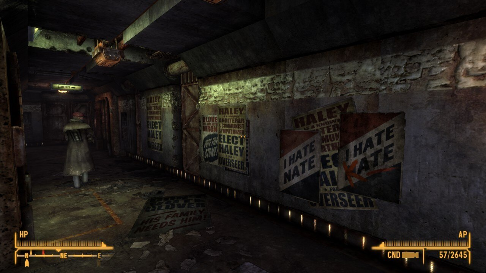
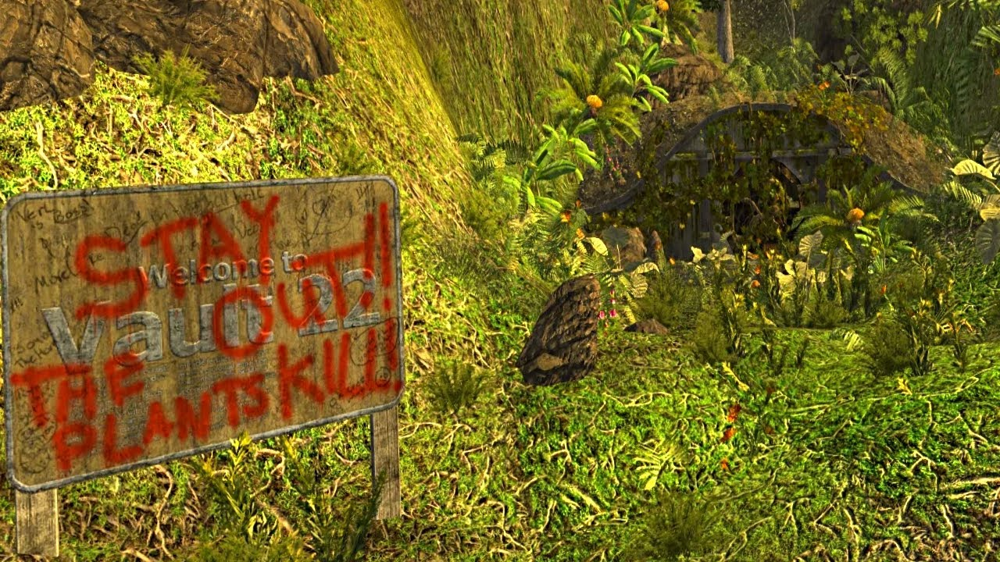
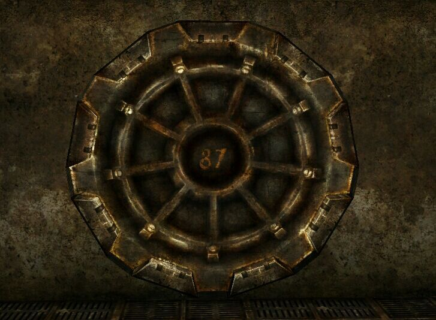
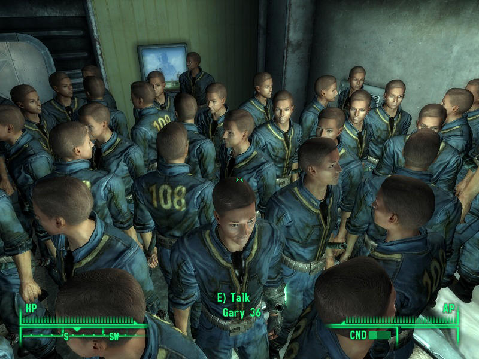
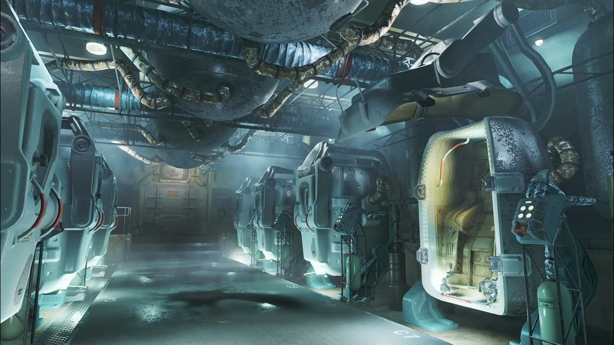

Vault-Tec's Deeper Purpose For Building The Vaults
Officially, the vaults were built to protect the American people from nuclear war. Families thought they were getting a ticket to ride out the apocalypse in safety, like a luxury underground cruise ship with fewer cocktails. Unofficially? Only a handful of vaults were actually meant to work as proper shelters. The rest were giant social/psychological/genetic petri dishes, designed to test weird scenarios: isolation, mind control, forced mutations, drug temptations, democracy-on-hard-mode, etc. The government (and Vault-Tec) wanted to gather data to help rebuild society afterward — specifically, a society they could fully control. In short: Vault-Tec wasn't trying to save humanity. They were running the galaxy's longest-running, most messed-up reality show, so that maybe, just maybe, they could create a device that would recreate a perfect society.
Vault 11
“Vote… or else.” Residents were told to elect a Overseer every year. The twist? The Overseer had to be sacrificed. Democracy, at it's finest. Naturally, things got ugly real fast. By the end, it was very “Lord of the Flies” with many turning on one another. Spoiler: if they'd refused to play the game, everyone would've been spared. Vault-Tec really just wanted some entertainment honestly.

Vault 21
Vegas, baby! The entire vault ran on gambling. Disputes? Settled by poker. Leadership? Blackjack. What's for dinner? Roll the dice. Mr. House eventually bought it out, filled it with cement, and turned it into a hotel. Honestly, probably the least insane vault. At least until someone bet their spouse on a game of craps.

Vault 22
“The vault where the plants are people now.” Scientists tried to grow crops super-fast with spores. Guess what? The plants grew super-fast and developed the personality trait of “hungry for people.” By the time you stumble in, it's basically a vegetarian horror movie where the salad eats you.

Vault 81
This one was a split-vault: half “normal people,” half “creepy lab techs watching from behind the glass.” The experiment? Test diseases on the residents like they're lab rats. Except the scientists chickened out and sealed themselves away. Which meant the “normal people” basically just… lived normal lives. So, Vault 81 ends up weirdly wholesome. It's the only one where you don't immediately go “Oh god, why?”

Vault 87
The “home of the Super Mutants.” Vault-Tec decided to force-feed everyone the Forced Evolutionary Virus. Spoiler: people didn't turn into X-Men. They turned into giant green monsters who hate pants. And it's one of the few vaults where opening the door means, “Congratulations! You've been invited to a buffet where you are the main course.”

Vault 95
Rehab vault for recovering chem addicts. Sounds good, right? Surprise! Vault-Tec planted a secret stash of drugs inside. Years into recovery, they opened the box of goodies. Instant relapse, chaos, death. Basically Vault-Tec invented the cruelest possible version of “April Fool's.”

Vault 108
Population included one guy named Gary. And another Gary. And another. They just cloned this poor dude like 100+ times. The clones could only say “Gary!” (helpful, right?). Imagine a frat house where everyone's name is Gary, and they all want to stab you.

Vault 111
“Cryo sleep experiment.” Residents thought they were signing up for a nice nap until the bombs blew over. Reality: they were frozen like popsicles so Vault-Tec could “see what happens.” Spoiler: what happens is everyone dies in their sleep except you. Ten out of ten, great long nap.

Vault 112
Everyone plugged into a permanent VR simulation. Sounds cool until you meet Dr. Stanislaus Braun, the guy running it. He turned the vault into his personal “Sims game with extra sadism.” Example: he turns you into a little girl in pigtails and makes you terrorize suburban neighbors. The real experiment? How many years people can tolerate living inside Braun’s twisted video game.